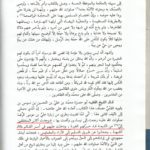

(Click here to watch the video version of this article)
12 Reasons to Leave Shiasm
Bismillah Al-Rahman Al-Raheem,
Recently, a brother asked for recommendations of a book or an online article that provides readers an outline of the dangers of Shiasm. The dangers, due to the problems in the foundations, are too many to count, due to the simple fact that Shiasm is not from Allah – subhanahu wa ta’ala – . However, much of what was written pertaining to this subject, especially in the English language, was not by experts in the field. It was with this in mind that I decided to provide our dear readers with a list of some of the most significant problems with Shiasm.
Without further adieu, I decided to stick to twelve reasons to leave the Twelver faith. May Allah – subhanahu wa ta’ala – guide all those that read it to the authentic Islam.
The list:
- A Pure Focus on Allah the Almighty
- Access to the Hadith of the Noble Prophet
- Acceptance of the Companions of the Noble Prophet
- Access to the Real Teachings of Ahlubayt
- Uniformity in the Teachings of Ahlulbayt
- A Taqiyyah-free Ahlulbayt
- Access to the Context of Qur’anic Verses
- Reliable Books of Tafseer
- Access to the Prophetic’s Biography
- Trust in the Hadith Compilers
- A Karbala Narrative that Makes Sense
- Disbelief in a Twelfth Imam that has been hidden for over a Thousand Years
1- A Pure Focus on Allah the Almighty
One of the main reasons for the conversion of ex-Shias to Sunnism is the focus on Allah – subhanahu wa ta’ala – . As many are aware, the main focus in Shiasm is not the Creator, but rather, the creation. Even though Sunnis venerate Ahlulbayt deeply, they do not make them the focus of their religion. This can be observed in their practices, lectures, and in their daily spoken language.
Shias, sadly, do not enjoy the same focus on Allah. This is most commonly observed in how they encourage putting Ahlulbayt, as an intermediary, between them and Allah. This is not encouraged in the Qur’an, for we know that Allah – subhanahu wa ta’ala – said [2:186]: “And when My servants ask you concerning Me, then surely I am very near; I answer the prayer of the supplicant when he calls on Me.”
2- Access to the Hadith of the Noble Prophet
Most people are aware that Sunnis build their faith on the Qur’an and the Sunnah of the Prophet – peace be upon him – . However, what most Shias are not aware of is the fact that there are not enough prophetic narrations in the Shia hadith corpus for them to build their sect upon, so the same cannot be said for them.
 For prophetic narrations, the Sunnis have a variety of sources that they can refer to. Off the top of my head, Sunnis can easily find prophetic narrations in the Saheehain, the four Sunan, Musnad Ahmad, Muwatta Malik, Al-Tabarani’s three Ma’ajim, Sunan Al-Daraqutni, Sunan Al-Darimi, Saheeh Ibn Hibban, Saheeh Ibn Khuzaimah, Musnad Al-Bazzar, Musnad Abi Ya’la, as well as the Masaneed that have been preserved through Ibn Hajar’s Al-Matalib Al-Aliya.
For prophetic narrations, the Sunnis have a variety of sources that they can refer to. Off the top of my head, Sunnis can easily find prophetic narrations in the Saheehain, the four Sunan, Musnad Ahmad, Muwatta Malik, Al-Tabarani’s three Ma’ajim, Sunan Al-Daraqutni, Sunan Al-Darimi, Saheeh Ibn Hibban, Saheeh Ibn Khuzaimah, Musnad Al-Bazzar, Musnad Abi Ya’la, as well as the Masaneed that have been preserved through Ibn Hajar’s Al-Matalib Al-Aliya.
Shias, on the other hand, do not have a book that collects prophetic traditions. When the odd prophetic narration is found in a book like Al-Kafi, or another one of the four books, it is weak due to the anonymity of a narrator 9 out of 10 times.
It should not be a surprise that the Shias do not have a large number of reliable prophetic hadiths, since they reject the majority of the companions of the Prophet – peace be upon him – as reliable narrators. This leads us to our next point.
3- Acceptance of the Companions of the Noble Prophet
Even though this may seem trivial to average Shias, it is clearly a matter of great significance as we can see from the previous point. The rejecting of companions ultimately leads to rejecting the vast majority of the prophetic traditions.
Shias may attempt to cling at straws by suggesting that the Sunni prophetic tradition is actually the result of Umayyad hadith factories. This theory is based upon a lack of an objective reading of the Sunni texts, since the majority of the Sunni prophetic traditions do not contain anything pro-Umayyad. On the other hand, the narrations about the merits of Ali and the rest of Ahlulbayt are plenty in number in Sunni books. More importantly, the vast majority of the Sunni traditions revolve around neutral practices and wisdoms from the Prophet – peace be upon him – . By neutral, we mean non-controversial.
Acceptance of the Companions also leads to access to a plethora of their personal opinions in rulings and practices, as well as Qur’anic interpretation. These opinions are not binding upon Sunnis, since the Companions were not infallible. However, access to the opinions of first generation of Muslims provides Sunnis with a better understanding of religious matters that have some vagueness due to language and historical context.
4- Access to the Real Teachings of Ahlubayt
The very suggestion may come as a shocker to most Shias, however, Sunnis do claim that they are the preservers of the teachings of Ahlulbayt as well. In brief, there is no doubt that both Sunni and Shias are selective with what they narrate. The most obvious example of this is that Ahlulbayt are on good terms with the companions in Sunni narrations. In Shia narrations, we find that they are foes. At times, the Shia Imams are found cursing the three caliphs and other companions as bitter enemies.
One may ask: How do you know that it was the Sunnis that were successful in recording the teachings of Ahlulbayt?
First of all, we would like to make Shias aware that matters are not as simple as a Sunni and Shia version of Ahlulbayt. Rather, we are dealing with the narrators that represent each sect. The Shia narrators from Ahlulbayt are from the city of Kufa like Zurarah, Abu Al-Baseer, and Mohammad bin Muslim. These are three of the top narrators who have attributed thousands of narrations to Ahlulbayt. Sunnis do not consider them to be reliable. Ironically, by looking into the earliest book of biographies (both Sunni and Shia), one can find some of the Imams cursing some of these men.
Another critical issue with the “Shia” version of Ahlulbayt is the sheer number of contradictions that have been attributed to the Imams, which leads us to our next point.
5- Uniformity in the Teachings of Ahlulbayt
 It will come as no surprise to Shias that are well-read that the early Shia books of hadith are riddled with contradictions. Not only do the Twelve Imams contradict each other in almost every chapter of fiqh, but these contradictions can be found attributed to the Imam himself. Al-Tusi alone has collected four volumes of contradictions in his book Al-Istibsaar. Sunnis, on the other hand, have uniformity in their narrations from Ahlulbayt.
It will come as no surprise to Shias that are well-read that the early Shia books of hadith are riddled with contradictions. Not only do the Twelve Imams contradict each other in almost every chapter of fiqh, but these contradictions can be found attributed to the Imam himself. Al-Tusi alone has collected four volumes of contradictions in his book Al-Istibsaar. Sunnis, on the other hand, have uniformity in their narrations from Ahlulbayt.
The main reason that Shias give for the massive amount of contradictions that can be found in their works is due to the taqiyyah of the Imams, which leads us to our next point.
6- A Taqiyyah-free Ahlulbayt
Not only is the true version of Ahlulbayt taqiyyah-free in Sunni books when it comes to their political actions and motives, but they are taqiyyah-free in their religious rulings as well.
Due to this, you will not find them providing false religious rulings in order to preserve their own lives or well-being. No, the Sunni Ahlulbayt do not compromise, nor do they let politics get in their way of teaching the religion.
7- Access to the Context of Qur’anic Verses
Shias are mostly unaware that specific issues in Qur’anic sciences (i.e. Chapters being Makki/Madani, abrogate in rulings, recitations, etc) are monopolized by Sunnis. These opinions can most be traced to the first century of Sunni scholarship. Ibn Abbas and his students played a major role in providing us with this wealth of information regarding context.
If Shias have any doubts in regards to this, then we suggest picking up a copy of Al-Tusi or Al-Tabrasi’s exegesis of the Qur’an in order for them to see the reliance of these top Shia scholar on early Sunni works. The same is applied to Ibn Mutawwaj’s Al-Nasikh wal Mansookh.
The same can be said about the actual reasons for revelation (Asbab Al-Nuzool) since no Shia classical works on the topic exist today.
8- Reliable Books of Tafseer
Tafseer Al-Ayyashi and Tafseer Al-Qummi are two books of tafseer that moderate Shias are not proud of. This is because these books are filled with opinions from the authors, supported by narrations from the Imams, that the Qur’an has been tampered with. We are very aware that moderate Shias do not accept such beliefs, which explains why they are not fond of these works in the first place.
Sunnis, on the other hand, are proud of their early books of tafseer. Tafseer Abdulrazzaq, Tafseer Ibn Abi Hatim, and Tafseer Al-Tabari, are three books of tafseer are works in which the authors’ primary focus was to provide readers with the earliest explanations of the Prophet – peace be upon him – and the early generations.
9- Access to the Prophetic’s Biography
 The average Shia is not aware that Shias do not have classical seerah books. Modern Shia seerah books are based upon the works of classical Sunni seerah works. This should not come as a surprise since specialization in seerah came from the middle of the second century. Examples include the works of Ibn Ishaq, which has been preserved through Ibn Hisham, and Musa bin Uqbah, which has been preserved by Al-Bayhaqi and others.
The average Shia is not aware that Shias do not have classical seerah books. Modern Shia seerah books are based upon the works of classical Sunni seerah works. This should not come as a surprise since specialization in seerah came from the middle of the second century. Examples include the works of Ibn Ishaq, which has been preserved through Ibn Hisham, and Musa bin Uqbah, which has been preserved by Al-Bayhaqi and others.
It is due to the lack of prophetic content that contemporary Shia scholars don’t attempt to piece together a complete biography of the Prophet – peace be upon him – from Shia sources.
To summarize this point, by becoming a Sunni, you can actually have a complete idea of the life of the Prophet – peace be upon him – , for it definitely included more than events like Al-Ghadeer, Al-Mubahala, and other events that revolved around Ahlulbayt.
10- Trust in the Hadith Compilers
Perhaps one of the most overlooked differences between the sects is that Sunnis have the luxury of having complete trust in their own hadith compilers. It is important to be aware the trust is not blind. Rather, the trust exists for two reasons: 1) The abundance of sources and the 2) sufficient amount of biographical data about compilers.
The abundance of sources ensures the reliability of the compilers. For example, there is not a single narration that can be found in Saheeh Al-Bukhari or Saheeh Muslim that cannot be found in another book of hadith. This is thanks to the abundance of the sources.
The same cannot be said about Shia books, for Al-Kulayni and Al-Saduq, for instance, are the sole narrators of hundreds, if not thousands of narrations.
The amount of biographical data is self-explanatory. One does not need to look far in order to find a wealth of information about the lives of Al-Bukhari and Muslim, while one would struggle to find more than a paragraph about the lives of the top Shia hadith scholars like Al-Kulayni and Al-Saduq.
11- A Karbala Narrative that Makes Sense
An ex-Shia brother said to me after reading some of our articles on Karbala that the exaggerated fabrications about the events of Karbala were the first things that gave him doubts about Shiasm.
If you never quite bought the idea that Abu Al-Fadl Al-Abbas defeated over a hundred men after losing an arm in battle, then the Sunni narrative is for you. If you simply cannot accept that Muslim bin Aqeel defeated 1,500 men single-handedly, then the Sunni narrative is for you. If you cannot stomach the idea that Al-Hussain willingly took his relatives, his infant son, and the children of Abdullah bin Ja’afar, to be knowingly slaughtered, then the Sunni version is for you.
12- Disbelief in a Twelfth Imam that has been hidden for over a Thousand Years
If most Shias in the fourth century, according to Al-Saduq in the intro of his Ikmal Al-Deen, were having doubts about the Twelfth Hidden Imam, due to his “lengthy” absence, then how is it possible that this is not an issue today after over a thousand years without this alleged hidden Imam?
It is suggested by Shias that Allah – subhanahu wa ta’ala – would never leave the world without a hujjah. However, this hujjah has been out of action for so long that his existence in occultation simply does not have an effect on the world.
Deep down, all religious Shias have these doubts and this is their chance to accept what they have always felt.
Our final request to you, our friends, is to refer to the top of the article.
Look at this list closely.
Can you really say that you are truly content knowing that you are missing out on all of this? Are you really satisfied being upon an Islam that is not the Islam that was revealed by Allah – subhanahu wa ta’ala – upon His final Messenger?
If you are, then we sincerely wish you guidance.
If not, then we extend our hand to you.
What about Ayat Al Tatheer, Hadith Al Thaqalain, Al Ghadeer, and other known polemical arguments? Check out our popular topics section for refutations to these arguments and others.
Any more questions? E-mail us at [email protected]
Assalamu alaikum, I enjoyed This write up. More grease to your elbow
Jazakumallahu khairan and may Allah give hidayah to the twelvers
Mashaallah, very powerful article. Once upon a time the Shias owned the net as in owning when it comes to spreading shubuhat, now Sunnis have risen. Shia propaganda is going to face very hard times.
“12 reasons”. The number selected is quite cheeky… :-)
What can you say about this……1) Hadith Al-Thaqalayn: The Prophet At
‘Arafat (Part 1)
It was 10 H (632 CE), during the last Hajj of the Messenger of Allah…
Sorry but we had to cut your comment short, you seem to have copied and pasted some long Shia article on Thaqalayn and asked us what our reply is to that? Answer is that you guys don’t even understand the narration of Thaqalayn, here is a detailed study on it:
http://twelvershia.net/2013/10/26/hadith-of-thaqalayn/
Who is the author of the article? Because I wanted to print this out.
We authored it, print anything you like. We’d be thankful if you mentioned our site.
I KNW THIS WILL NOT BE POSTED BUT U CONTINUE…… MANY HAVE COME AND GONE SO WILL U….. TO OPPOSE GOD THERE IS A CHURCH OF SATAN ….. N HERE U HAVE THIS WEBSITE….. MAY U LIVE WELL …..N GET YOUR DUES FR DOING WHATU R DOING…. O CHILDREN OF ABU SUFYAN
Very academic response Mr.Shia.
Salam to whom are able :-
The 12 points narrated Are written by an ignorant n non Shia , and had never been Shia.
Shiasm is the Real Islam, who follows the real Patgh of Allah, Tabarak w a Talah and the teachings of The Holy Prophet., ,
Who leaves Shiasm means they leave Islam and entered in to shirk, Because one can easily came to know and show others the Mushrik Creed of Sunnis from there So Called Hadith Books, , Sunnis Creed on ALLAH is not Islamic , The not believe Allah as ALLAH Almighth actually is ? the are Mushrik .
Real shia— care to explain yourself? How can you say Sunnis don’t believe in Allah (Swt) and all his might? Im really curious as to how you know this, or do you also have knowledge of everything like your made up Imams? Please do answer.
Finally some of us Sunni’s are being proactive on this subject. Like a brother mentioned above in the comments. The Rafidah had a lot of their propaganda on the web, Masha’Allah some of us have risen to battle that. To the administrators, thank you for this website. Asalamu’Alaikum. P.S. All the Shia have ever done, is stab the Muslims behind their back, making deals with the Crusaders against Salahudin Al-Ayubi, helping the Mongols slaughter Muslims, till this day, slaughtering Sunnis in Iraq, Afghanistan, Syria and much more. What did they ever do? Lobby for the U.S. Invasion of Iraq and Afghanistan. Funny, Afghanistan to the East of Iran, Iraq to the West of Iran, Sadam (Sunni), and in Afghanistan Sunni, both invaded, Iran never touched ever by the US (fact) go figure… But but but, Iwan hates Amewica, Iwan and Amewica al goin to fight… Salam
Go to the shiapen your all answer will be available and you will find who is true
Shiapen articles are very bad, we refuted a few of their big ones here:
http://www.twelvershia.net/rebuttals-against-shiapen-com-answering-ansar/
Jazakallah khair brothers. I know alot of brothers who left shittism because of Allah guidance and brothers efforts like yourself. I am one of them. Jazakallah khair
God bless you, glad to be of service.
In the Name of ALLAH TA’ALA, THE GRACIOUS, THE MERCIFUL.
Salams to all.
Bi Idhnil LLAAHI TA’ALA,
I am a Sufi Twelver Shia Muslim and a Sufi Muslim Theologian and Researcher.
I have the following comment to make.
Unfortunately two third of Sufis are on the wrong path.
Only one third of Sufis are in the Path of the Holy Quran.
Having said this, I am proudly a Shia Muslim. But I always strive for the unity of the Ummah of our Master Muhammad (saw).
It is true that many shias are misled and out Islam.
But many Sunni Barelvis are also out of Islam.
The former make Holy Imam Ali (as) as a semi-god, the latter make Holy Prophet Muhammad (saw) a semi-god.
Both are on the Path of Xirk.
The Salafis are no better because many are Anthropomorphists and falsely ascribe to ALLAH TA’ALA properties of HIS Creation like Hands, Feet, Eyes and Face!! This is Xirk and totally goes against Surah 112 of the Holy Quran, Surah 42 Ayah 11 of the Holy Quran, Surah 6 Ayah 151 (alla tushriku bihi xay’a) of the Holy Quran,and many other passages of the Book of ALLAH TA’ALA.
But among the Shia, and among the Barelvi Sunni, and among the Salafi, are True Muslims who abide by the Holy Quran and the Sunnah of our beloved Master Muhammad (saw).
So, my advice to both, the owners of this Website, and to fanatic readers, is that, forget your diferrences and stop labeling the totality of a specific sect (shia, barelvi, salafi) as disbelievers, and unite under the Flag of TAWHID and under the Flag of the Holy Quran, just as ALLAH TA’ALA said in HIS Book, in Surah 3, Ayah 103, where HE, THE MOST HIGH, THE ABSOLUTE, says:
“And hold fast to the rope (the holy quran) of ALLAH, altogether, and do not become divided. And remember ALLAH’s blessings upon you; how you were enemies, and HE reconciled your hearts, and by HIS grace you became brethren. And you were on the brink of a pit of fire, and HE saved you from it. ALLAH thus clarifies HIS revelations for you, so that you may be guided.”
Wa Akhirud Dawana Anil Hamdu lil LLAAHI RABB il Alameen.
Allama Riaz Carmali.
Wassalam
We never made Takfir on anyone, However according to your comment you consider many Barelvis, Shias and Salafis polytheists. I fail to see how you’re not an intolerant Takfiri.
Assalamualaikum;
To Allama Riaz Carmali, I read your comment on Salafi having Anthropomorphic beliefs. What are you talking about? Have you ever actually conversed with someone who follows this particuar school of thought?
I myself follow this path, and may Allah protect us, for certainly we do NOT say such things.
Perhaps you have been misinformed?
Good job
would u pls go to quaro and also contribute to refuting shia nonsense wallahi the lies and misconception that they are speeding is treble anyway God bless u